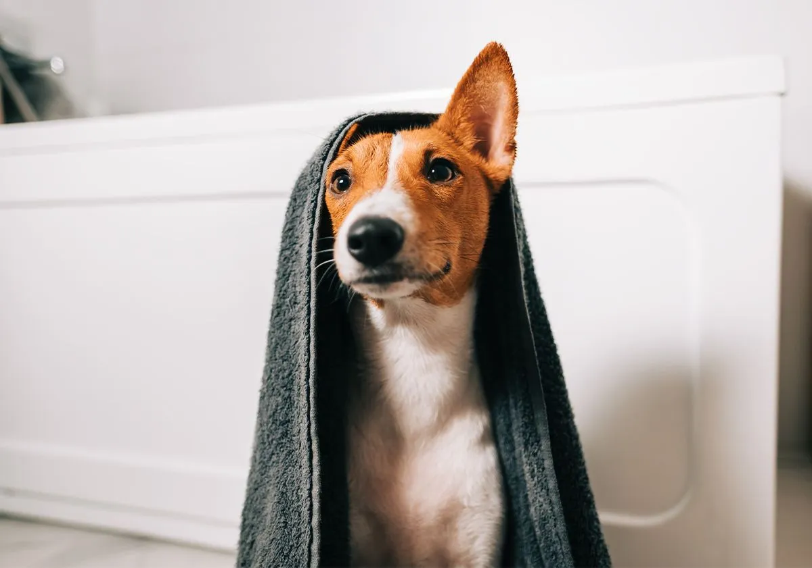

Le toilettage du chien est essentiel à soin bien-être pour qu’il soit bien dans ses pattes. Pour la bonne hygiène du chien, il est conseillé de le toiletter régulièrement. Vous pouvez faire appel à un professionnel ou le réaliser vous-même. Découvrez nos méthodes et conseils pour bien toiletter votre chien et prendre soin de lui au quotidien.